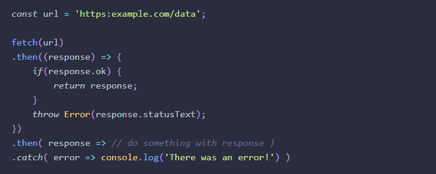

Chapter 11: Further Functions
-
the .call() on the end of the function will pass the parameter in as
'this'. I'm not sure when I would use this over just having the function
accept a parameter to begin with.
-
Memoization allows us to save a result in a cache property and then use
it later rather than having to call the function again. this is helpful
for computations that take a long time
-
Temparary variable (temp) allows you to hold information for a short
time and then it is erased
- Can write code in self-contained blocks to execute them separetly
-
I think the most interesting thing is a function that can redefine
itself. I have never heard of this and I am curiuos as to a real life
example of needing to do this rather than writing a brand new function.
It is especially werid because only the first time the function is
called is it used. After the first time, it is always defaulted to what
it was redefined to.
-
Recursive function is one that invokes itself until a certain condition
is met. Helpful for an iterative process.
-
I'm not sure if I understand callbacks or not. I've used them countless
times but if I were to try and define them I don't think I could I know
they are extremely popular and helpful but it is confusing how they are
passed as a parameter but ran as a function.
-
All of the nested callbacks are very confusing. Because there are
multiple parameters passed into with the callback. I don't know what
happens to the other parameters because it is clear that the callback is
called so when can the other parameters get used?
- Promises: I've had to learn about promises in node.js. But
-
A promise represents the future result of an asynchronous operation.
They don't do anything that can't already be achieved using callbacks.
-
When a promise is created it is set to pending until the operation is
complete. Then it is either resolved or rejected
- you can chain multiple together .then().then().then().catch()
- Functions can return functions
-
I never knew there was so much that could be done with functions. is it
worth knowing all of these things or should they just be learned as
necessary in the field?
-
Highier order either accepts a function as an argument or returns a
function as a result.
-
I think that I have used higher order functions when returning a
function.
-
In a curried function, it talks about not having all of the parameters
necessary so you call another function. What I don't understand is where
that function is getting it's parameter if it is inside the scope of the
first function.
Chapter 13: AJAX
- Always heard of AJAX, have no idea what it is
-
Ajax is a technique that allows web pages to communicate asynchronously
with a server. It dynamically updates web pages without reloading them
-
Revolutionized how websites worked as they were no longer static but
dynamic.
-
Client is a web browser that will request a resource. Server will
process the request and send back a response
- Server side language such as node.js
-
Asynchronous: when a request doesn't stop the program and wait for a
response.
-
API- application programming interface is a collestion of methods that
allows external access to another program or service
-
Fetch API is standard for reuesting and sending data asynchronously
across a network. Uses promises.
- Uses fetch() method which takes the URL as an argument.
- returns a promise that resolves the response from the URL
-
Each response has an "ok" property to check if the response was
successful
-
